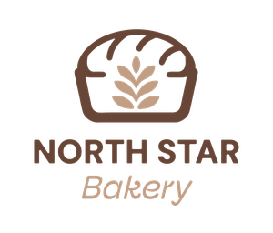

Maya — Head Baker
Maya handles the bread schedule and starts early so the first loaves are ready in the morning.

Fresh bakes.
Brighter days. ♡
Our story
North Star Bakery started with a simple idea: make good baked goods and give people in the neighborhood an easy place to stop in. We keep a few everyday favorites on the menu and add seasonal items when they make sense.
It is a small bakery, so the focus stays on useful things: bread for the week, something sweet in the morning, and larger orders when people are celebrating.

Same neighborhood.
Fresh from the oven. ♡
Ingredients
We focus on ingredients that are dependable and taste good. When we can, we buy from regional suppliers and use seasonal fruit for some fillings and toppings.
Good ingredients do not need a long explanation.
The people behind the counter
Maya handles the bread schedule and starts early so the first loaves are ready in the morning.
Daniel works on pastries and helps plan cakes and larger orders.
Leila helps with pickups, customer questions, and keeping pre-orders organized.
A small bakery on purpose
We would rather keep a smaller list of things we can make consistently than try to have everything every day. That is also why larger orders are planned ahead.
Ask about a pre-order